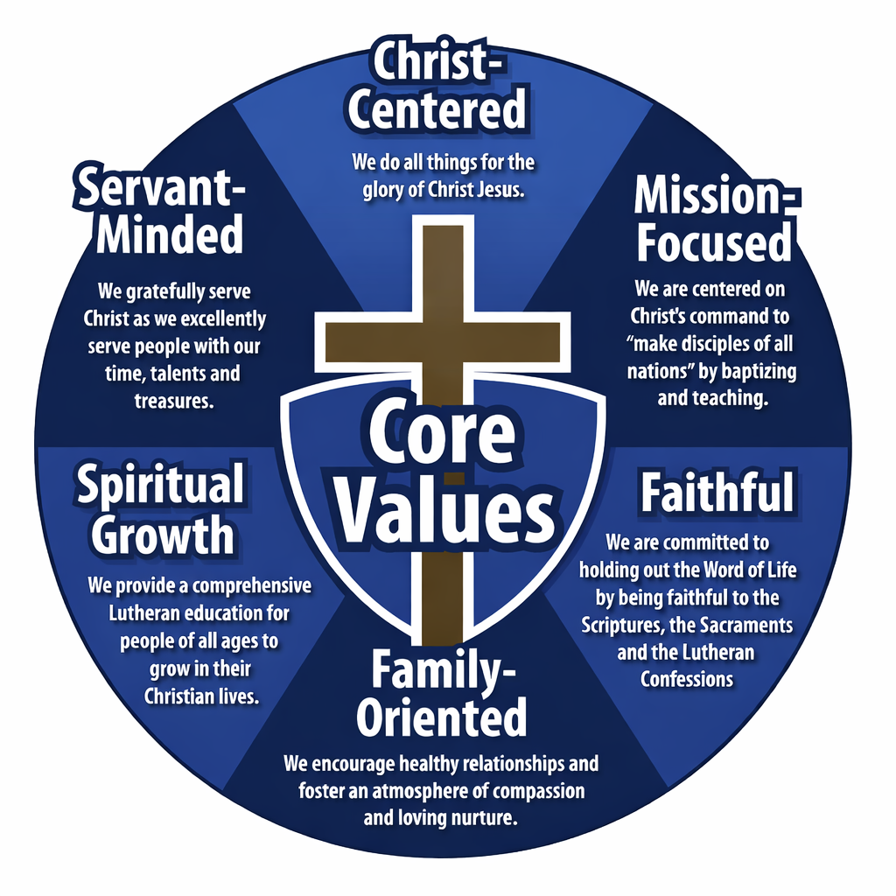

The Wisconsin Evangelical Lutheran Synod (WELS) is a confederation of nearly 1,300 Lutheran congregations across the United States and Canada, serving more than 350,000 members who gather to hear God's Word and receive the sacraments.
Founded in 1850, WELS is committed to faithfully proclaiming the unchanging truth of God's Word. We believe the Bible is the inspired, inerrant Word of God and the only source of truth for Christian faith and life.

Essential truths that shape our faith and guide our ministry
Learn More